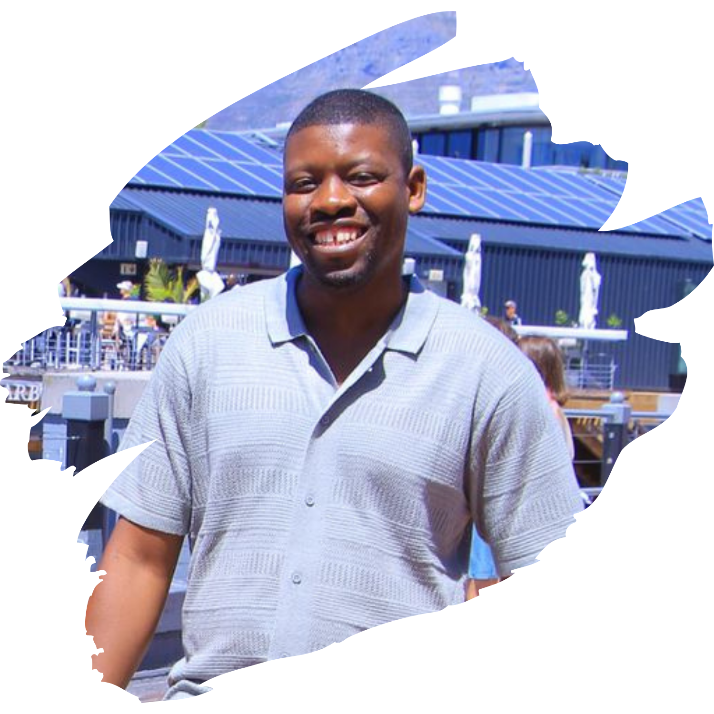

I build web applications, integrations, and the systems behind business websites. My career began in design a decade ago, and it still shapes how I work: I build things people can use without instructions, and I can explain the technical decisions to the people who depend on them.
Day to day that means Angular and TypeScript on the front end, PHP and Python behind it, and the hosting and deployment that keep it running. I take projects from requirements through launch and ongoing support.

Component-based, responsive interfaces in Angular and TypeScript, built to stay maintainable as they grow.
Custom WordPress and WooCommerce plugins in PHP, with Python and FastAPI for newer services. Workflows, approvals, and role-based access are the parts I enjoy most.
Connecting websites, forms, CRMs, and analytics through REST APIs, webhooks, HubSpot, Zapier, and Google's APIs.
Domains, DNS, migrations, backups, and deployments, plus hands-on AWS and Firebase experience.
Co-founder and lead developer. I design, build, deploy, and support websites and web applications for business clients. Recent work includes a custom WooCommerce rental system now live for a client, with applications, approvals, availability rules, and booking management. I also built a Python system that turns search data into ranked content opportunities, and I'm developing an Angular and FastAPI platform to run the company's own operations.
Graphic designer on the digital content production team. Produced and quality-checked educational resources at volume as part of an international remote team, working to brand and accessibility standards and fixed deadlines.
Web developer. Built and maintained the company's WordPress site and improved its usability, responsiveness, performance, and technical SEO.
Co-founder and digital lead. Designed, built, and ran the company's e-commerce website and supported its online marketing and daily digital operations.
Digital designer and marketing lead. Produced digital and print marketing, brand assets, and campaign visuals. Years later, I built the rental system CinegearWorld runs on.
Currently preparing for the Solutions Architect – Associate exam.
Studying alongside client work.
I'm open to development roles, freelance projects, and collaborations. If you have something in mind, I'd like to hear about it.
Get in Touch